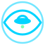

Each case has its flight path, the evidence, and the official or best explanation. Pick one from the list, or start here:
Drag to spin · scroll to zoom · ? for all shortcutsDrag to spin · pinch to zoom · tap a marker to open it